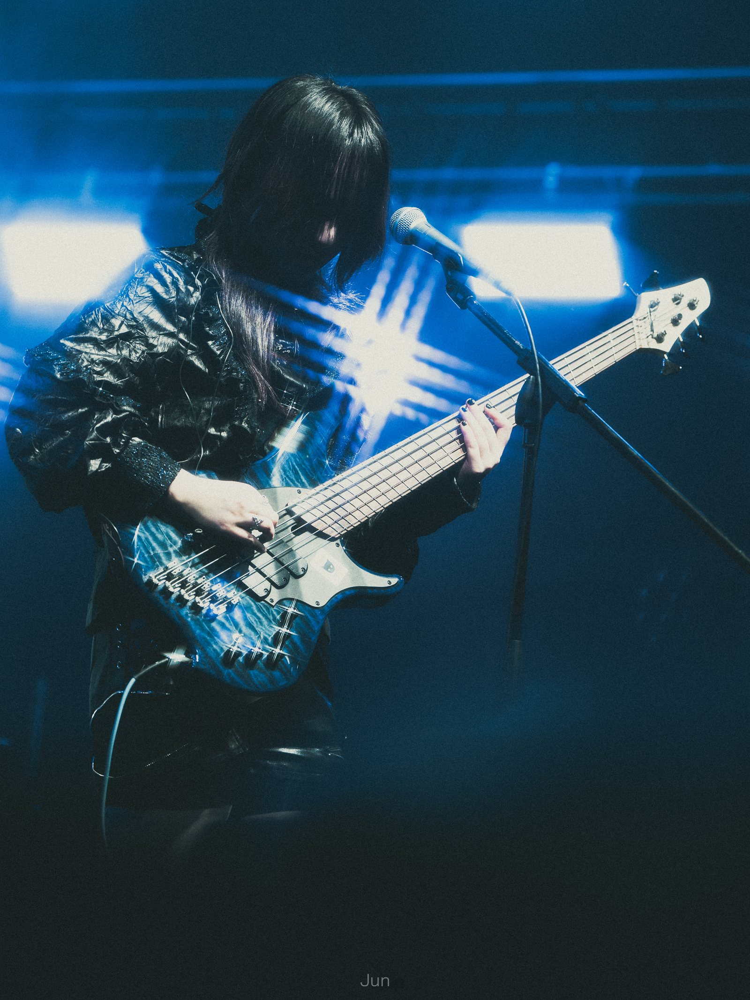
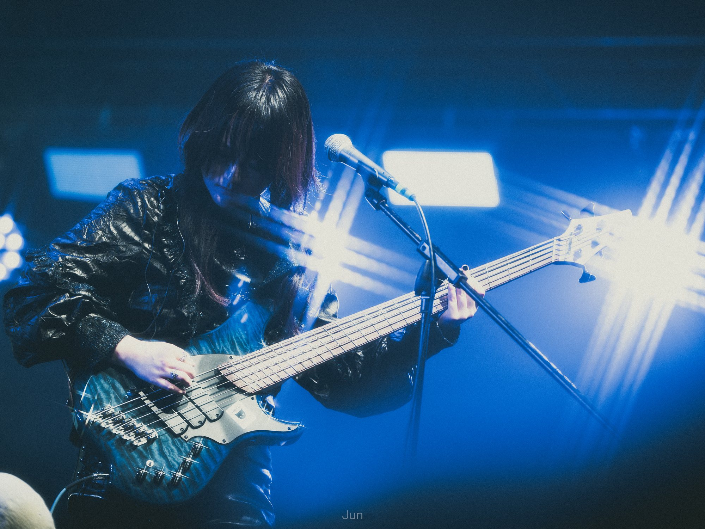
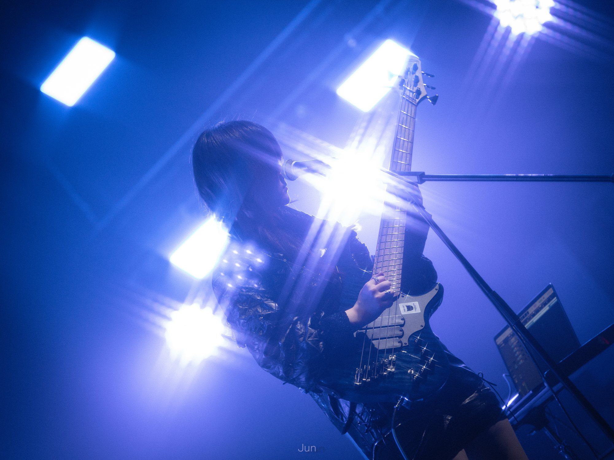
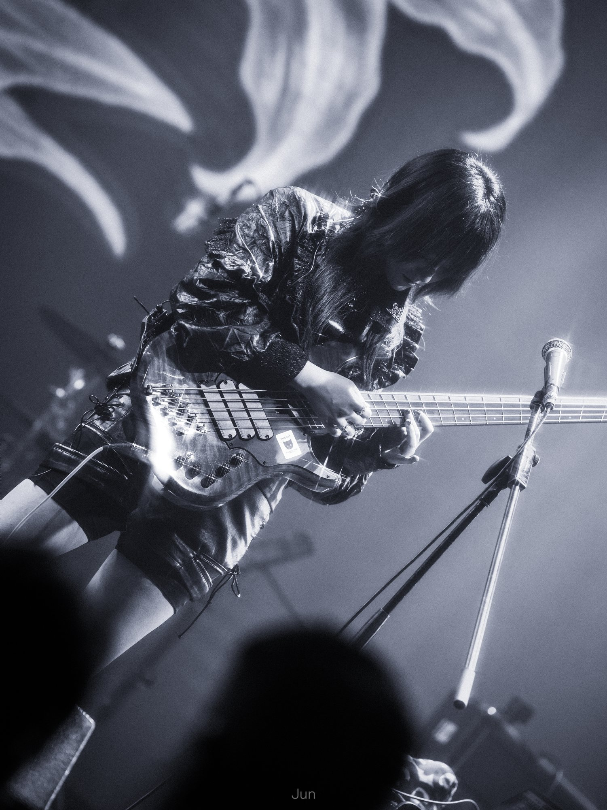

专辑

音乐 / 聆听室
HAZEZZ
作曲 · 编曲 · 贝斯 · 吉他 · 制作
前卫金属核、日系摇滚，以及叙事型器乐创作。
专辑
2026-04-17
Orchid
HazezZ
2025-10-21
春日和煦
HazezZ
2025-03-22
He and Me
HazezZ
2025-02-01
花园
HazezZ
2024-12
Felix
HazezZ
2024-12-21
Affizieren
HazezZ
2024-08-29
淤
HazezZ
2024-07-05
Mr.Idiographic
HazezZ
2024-02-14
箱庭
HazezZ
2023-11-11
本格推理
HazezZ
2023-08-30
Epilogue
HazezZ
2023-08-27
恋に落ちてしまえない
HazezZ
2023-08-23
我恨你们所有人
HazezZ
2023-08-11
Rainy days
HazezZ
2023-05-30
小葉紫檀
HazezZ
2023-04-29
柳
Armeria / HazezZ
2023-04-21
夜顔
HazezZ
2023-02-24
現人
HazezZ
2023-02-18
Moonlapse (feat. 起子)
HazezZ
2022-12
願う
HazezZ
2022-07
写不下的海边小镇和你
HazezZ
2022-08-30
Ipomoea alba
HazezZ
2022-07-09
Agny
湖323 / HazezZ
2022-05-20
スパーノヴァ
HazezZ
2022-03-03
孤星Prelude
HazezZ
2022-02-04
Z（E）RO
HazezZ
2021-12-06
フォーマルハウト/南鱼座α
HazezZ
2021-11-25
罪
HazezZ / iine_p (薛天from灯诱）
2021-11-19
水母与湖
HazezZ
2021-10-29
夜明け、明暗の境目/凌晨、明暗交界处
HazezZ
2021-10-17
心臓警報
HazezZ
2021-10-09
影
HazezZ
2021-06-03
未来に出会えたらいいな
HazezZ
2021-02-02
分离性遗忘症
HazezZ
About the Practice
我从钢琴和小提琴开始，之后自学编曲、贝斯与电吉他。从十四岁起，我逐渐把旋律与和声发展成完整作品，并完成乐队编配、演奏、录制与制作。
现在的创作实践把歌曲写作、低频设计、吉他与贝斯演奏、配器和混音视为同一个作曲过程的组成部分。
钢琴 → 小提琴 → 作曲 → 贝斯 / 吉他 → 制作
展开完整经历
早期训练
我从钢琴开始建立最初的听觉、和声与结构感，也是在这一阶段接触了尤克里里。
12 岁
开始学习小提琴；弦乐训练让我更早理解旋律线条、声部关系与复调意识。
14 岁
开始基于系统学习的乐理进行原创作曲，并随后以 Distinction 完成英皇乐理全部等级考试。
15–17 岁
我独立自学编曲、贝斯与电吉他，把旋律发展成完整作品，也开始从整体编制角度设计声部、低频与音色层次。
19 岁
开始自学混音与制作，把写作、编曲、演奏、录制与后期处理逐渐整合为一条更完整的个人创作流程。
合作项目
除个人作品外，我也参与过专辑制作、贝斯声部创作与录制等合作项目。

演出档案
精选场次
003 /
CHONGQING FULI

贝斯 / 人声
ORCHIDHE AND MEAFFIZIEREN
IMAGES © JUN

